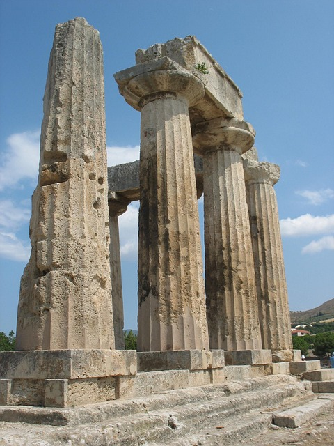

Anfangs soll Periander ein friedlicher Herrscher gewesen sein.
Doch
dann, wie Parthenios von Nicaea berichtete, kam es zu einem Vorfall, der
seinen Charakter vollständig verwandelte. So soll sich Perianders Mutter
Kratea in ihn verliebt haben und sich des Nachts im Dunkeln zu ihm
geschlichen haben, ihn verführt haben und vor dem Sonnenaufgang wieder
verschwunden sein. So blieb Periander ihre Identität eine Zeit lang
verborgen. Doch nach einer Zeit, als seine Mutter sich wieder zu ihm
legte, entzündete er eine Lampe und entdeckte, dass seine Mutter seine
Geliebte war. Er war so erzürnt, dass er sie zunächst umbringen wollte.
Auch wenn er sie leben ließ, fing er an, sich massiv in einen
gewalttätigen und grausamen Herrscher zu wandeln.

Periander galt als Prototyp des Tyrannen, hart, aber weitsichtig. Unter
seiner Herrschaft entwickelte sich Korinth zu wirtschaftlicher und
kultureller Blüte. Er plante angeblich den Kanal von Korinth, schuf eine
starke Flotte und sorgte durch weitreichenden Handel und kriegerische
Erfolge (Eroberung von Epidauros, Korkyra) zur größten Geltung von
Korinth in der Antike. Zu seinen gesetzgeberischen Erfolgen zählte die
Zuteilung von Land an arme Bauern, Arbeitsbeschaffungsmaßnahmen,
Luxusgesetze und Verbot des Sklavenerwerbs. Im Streit zwischen Mytilene
und Athen um Sigeion wurde Periander als Richter berufen. Er entschied
den Streit zugunsten Athens. Periander von Korinth – der Gouverneur mit
der paradoxen Bilanz Im Detail:
Periander wird meist in das 7. Jahrhundert v. Chr. datiert, teilweise
genauer in die Zeit um ca. 625–585 v. Chr. eingeordnet. Er war einer der
frühesten und zugleich langjährigsten Herrscher der korinthischen
Tyrannis und wirkte in einer Phase, in der Griechenland sich von
gesetzlosen Entwicklungen zu stärker zentralisierten Machtformen
bewegte.
Periander stammte aus Korinth, einer der reichsten und strategisch
wichtigsten Städte Griechenlands, direkt am Isthmus von Korinth. Die
alten Quellen legen nahe, dass er Teil einer dynastischen Herrschaft
war, die Korinth politisch festigte und zugleich unter den Erwartungen
eines prudenten, oft strengen Regierens stand. Konkrete Angaben zu einer
formalen „Ausbildung“ im modernen Sinn fehlen; vielmehr lässt sich
sagen, dass Periander als Herrscher in einer Zeit großer politischer
Praxis heranreifte: Er lernte politische Kunst, Diplomatie, Machtbalance
und die Kunst, Ressourcen zu nutzen, um Stabilität zu schaffen. Seine
Erziehung dürfte stark von der königlichen oder tyrannischen Tradition
seiner Stadt geprägt gewesen sein, in der Führung durch Furcht, Ordnung
und wirtschaftliche Straffheit als Tugenden galten.
Er regierte Korinth in einer Epoche, die oft als Beginn der tyrannischen
Herrschaft in Griechenland bezeichnet wird. Sein Wirken ist durch eine
Mischung aus wirtschaftlicher Blüte, starker Zentralisierung und
strenger Gesetzgebung gekennzeichnet. Unter seiner Führung erlebte
Korinth eine Blütezeit in Handel und Infrastruktur. Berichte sprechen
von einer straffen Verwaltung, die darauf abzielte, Korinth zum
wirtschaftlichen Nabel des Peloponnes zu machen. Gleichzeitig ist sein
Name in den Quellen auch mit grausamen oder rücksichtslosen Maßnahmen
verbunden, die Stabilität und Ordnung sichern sollten—eine ambivalente
Bilanz, die Periander zu einer der umstrittensten Figuren der
griechischen Regierungsführung macht.
Periander eher als pragmatischer Staatsmann bekannt, dessen Lehren aus
der Erfahrung politischer Praxis resultieren. Die griechische
Überlieferung hebt oft die Spannung zwischen Effizienz, Macht und
Menschlichkeit hervor, die Periander widerspiegeln könnte: wie viel
Härte nötig ist, um Ordnung zu bewahren, und zu welchem Preis Freiheit
und Loyalität erkauft werden. Sein Ruf als „taktischer“ Herrscher zeigt,
wie politische Weisheit auch im Durchsetzen von Maßnahmen liegen kann –
nicht nur in philosophischer Besinnung, sondern in konkretem Handeln,
das das Funktionieren einer Stadt sicherstellen soll.
Periander zählt zu den Sieben Weisen, weil ihm in den antiken Sammlungen
ein Platz als eine der prägenden Gestalten der frühen griechischen
Staatsführung zugesprochen wird. Die Zuordnung erfolgt weniger über
schriftliche Werke als über die Weitergabe von Lehren, Lebensweisen und
der Rolle, die er in der politischen Kultur seiner Zeit gespielt hat. In
den Sammlungen und Chroniken wird er oft als Vertreter einer
entschlossenen, ordnungslastigen Staatskunst gesehen, die sowohl
positive Impulse für Wachstum als auch potenzielle Gefahren durch
autoritäre Züge mit sich bringt. So wird Periander als eine Art Brücke
zwischen wirtschaftlicher Stärke, politischer Macht und moralischer
Reflexion gesehen – eine Figur, deren Wirken in der Erinnerung der
Griechen als lehrreich galt.
Schlussbetrachtung:
Periander von Korinth bleibt eine vielschichtige Gestalt: ein Herrscher,
der Korinth wirtschaftlich stark machte und zugleich eine rigorose,
manchmal furchteinflößende politische Ordnung durchsetzte. Seine
Einordnung unter die Sieben Weisen erfolgt durch die tradierten
Interpretationen antiker Autoren, die in ihm eine exemplarische
Verbindung von Staatskunst und moralischer Verantwortung sahen. Die
Legende von Periander regt bis heute dazu an, über das richtige Maß an
Macht, die Kosten politischen Handelns und die Balance zwischen
Stabilität und Freiheit nachzudenken.
Hinweis: Es gibt auch Listen zu den Sieben Weisen, in denen
statt Periander folgender Weise genannt wird: Mysion (Myson von Chenai,
auch als Myson von Chen oder Mentionsformen) .Mysion (Myson von Chenai;
auch Myson von Chen) war laut antiken Quellen ein griechischer
Philosoph; oft wird er als Zeitgenosse von Solon und anderen frühen
Staatsmännern gesehen, doch konkrete biografische Daten fehlen.Mysion
tauchte in einigen dieser Listen als einer der Namen auf, vermutlich
aufgrund seiner angeblich weisen Ratschläge, seines politischen oder
sozialen Einflusses oder einfach aufgrund der literarischen
Überlieferung, die ihn in Verbindung mit klugen Sprüchen oder Prinzipien
bringt.